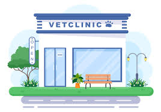

Baños especializados
Realizamos baños con productos adecuados para cada tipo de pelaje, ayudando a mantener la piel limpia, sana y protegida.
Clínica veterinaria en Florida, Valle
En Lugo Vet brindamos atención veterinaria, estética animal, limpieza dental y acompañamiento profesional para perros y gatos, con un servicio cercano, organizado y confiable.
Nuestros servicios
Contamos con servicios pensados para el bienestar, la higiene y el cuidado preventivo de cada mascota.

Realizamos baños con productos adecuados para cada tipo de pelaje, ayudando a mantener la piel limpia, sana y protegida.
Ofrecemos cortes higiénicos y estéticos adaptados a cada raza, buscando comodidad, limpieza y buena presentación.
Ayudamos a prevenir enfermedades bucales, mal aliento y molestias mediante una correcta higiene oral.
Lugo Vet es una propuesta de gestión veterinaria pensada para mejorar la atención y la organización de una clínica. Desde una misma plataforma se pueden administrar mascotas, servicios, citas y seguimiento básico, logrando procesos más ágiles y ordenados.
Además de mostrar una imagen profesional de la clínica, esta página busca comunicar confianza, cercanía y compromiso con el bienestar animal.
Contáctanos